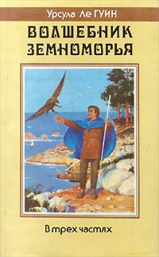
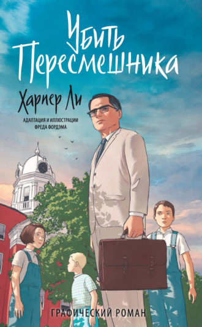
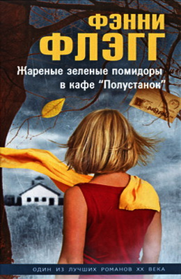
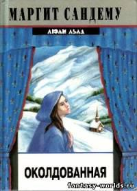
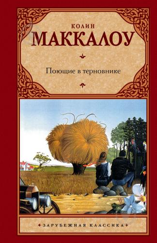
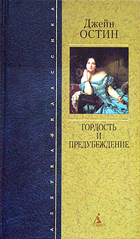
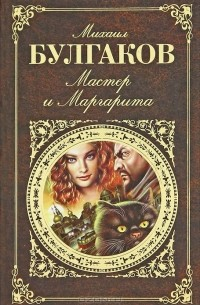
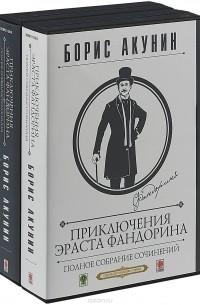
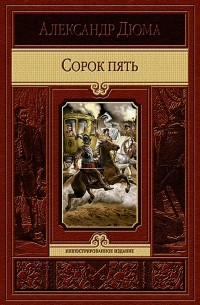

-

Урсула Ле Гуин - Волшебник Земноморья
Это книга о юноше по имени Гед, которому судьбой предназначено стать одним из величайших героев Земноморья. Пройдя нелёгкий путь от сына простого деревенского кузнеца до могучего волшебника, он преодолеет множество трудностей и испытаний, встретит верных друзей, познает и радости, и горести этого мира... Но главное — он пройдёт до конца свой путь, не побоится встретиться с самым опасным врагом и обретёт свою подлинную сущность, станет собой.
-

Ли Харпер - Убить пересмешника
История маленького сонного городка на юге Америки, поведанная маленькой девочкой. История ее брата Джима, друга Дилла и ее отца – честного, принципиального адвоката Аттикуса Финча, одного из последних и лучших представителей старой "южной аристократии". История судебного процесса по делу чернокожего парня, обвиненного в насилии над белой девушкой. Но прежде всего – история переломной эпохи, когда ксенофобия, расизм, нетерпимость и ханжество, присущие американскому югу, постепенно уходят в прошлое.
-

Фэнни Флэгг - Жареные зеленые помидоры в кафе "Полустанок"
Знаменитый роман известной американской писательницы Ф.Флэгг рассказывает о дружбе женщин, живших в первой половине нынешнего столетия и в наше время. Вы узнаете историю одного маленького американского городка, в котором, как и везде в мире, переплелись любовь и боль, страхи и надежды, дружба и ненависть. История эта будет рассказана с такой искренностью, что запомнится на долгие годы, и роман Фэнни Флэгг станет одной из самых любимых книг - как стал он для очень многих во всем мире.
-

Маргит сандему - Люди льда
Роман повествует о древнем клане Людей Льда, над которым тяготеет проклятие прародителя клана, заключившего сделку с дьяволом. В каждом поколении рождается по крайней мере один проклятый с магическими способностями и склонностью ко злу. Некоторые проклятые борются со своей склонностью ко злу, другие принимают её как есть, и это является одной из основных тем повествования. Судьба клана в романе прослеживается на протяжении нескольких столетий — действие первого тома происходит в 1581 году, а последнего в 1960-х годах.
-

Колин Маккалоу - Поющие в терновнике
Захватывающая семейная сага, пронзительная история о беспримерной любви длиною в жизнь - роман Колин Маккалоу по праву получил всемирное признание, а блестящая экранизация 1983 года принесла ему еще большую популярность. В этой книге есть все - экзотическая обстановка, неожиданные повороты сюжета, исключительная эмоциональность, тонкие и убедительные психологические портреты. Но прежде всего это подлинный гимн великой любви, во всех ее проявлениях: любви к родной земле, любви к детям и родителям, любви к Богу… и вечной любви мужчины и женщины.
-

Джейн Остин - Гордость и предубеждение
Классика английской литературы, книга, фигурирующая во всех списках «обязательных к прочтению», «Гордость и предубеждение» давно занимает достойное место в числе самых выдающихся мировых романов. Здесь нет длинных и скучных диалогов, страстных поцелуев и затяжных объятий, зато в изобилии – тонкая ирония и острый юмор, яркие и запоминающиеся герои, точно подмеченные нравы высшего общества 19 века и легкое, увлекательное изложение событий.
-

Михаил Булгаков - Мастер и Маргарита
«Мастер и Маргарита» – главный роман Булгакова, книга на все времена, ожидавшая своего издания 50 лет. Это история о дьяволе и его свите, посетивших Москву 1930-х, о прокураторе Иудеи Понтии Пилате и нищем философе Иешуа Га-Ноцри, о талантливом мастере и его прекрасной и верной любимой Маргарите. Философская глубина романа сочетается с увлекательным сюжетом, а иронический взгляд автора – с верой в вечные ценности, без которых невозможна жизнь человека.
-

Борис Акунин - Приключения Эраста Фандорина
Борис Акунин подарил литературному детективному миру удивительного героя – Эраста Фандорина. Главный герой – образцовый российский аристократ, проявивший себя гениальным следователем, сначала на поприще государственного служащего, затем как частный детектив. Произведения принесли автору известность и любовь читателей всего мира. Это самый масштабный цикл писателя к данному моменту и каждая книга, каждое новое расследование не похоже на предыдущее.
-

Александр Дюма - Сорок пять
«Сорок пять» — роман, завершающий трилогию о гугенотских войнах, в которую вошли «Королева Марго» и «Графиня де Монсоро». Борьба Генриха Наваррского за престол, обреченность короля Генриха III, которого пытаются спасти сорок пять всадников-телохранителей, возрастающее могущество Гизов – увлекательное переплетение исторических событий и романтических приключений в романе непревзойденного мастера жанра Александра Дюма.